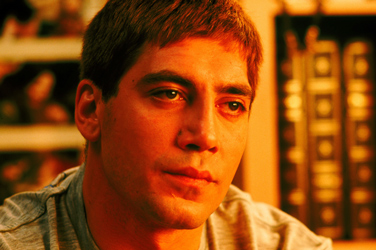
Javier Bardem - David de Paz
Francesca Neri - Elena Benedetti
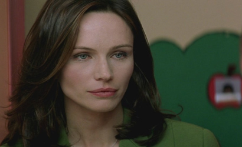
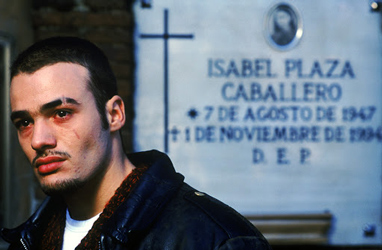
Liberto Rabal - Víctor Plaza
Pilar Bardem - Doña Centro de Mesa
Penélope Cruz - Isabel Plaza Caballero
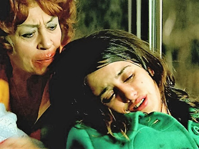
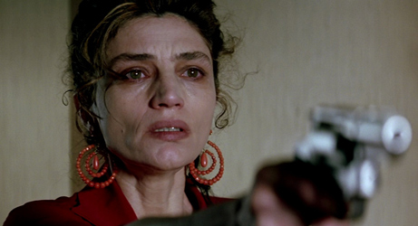
Ángela Molina - Clara
Bus Driver
Chica
Conductor
Wheelchair basketball player
Voice (archive sound on radio)
Agustín Almodóvar - Undertaker
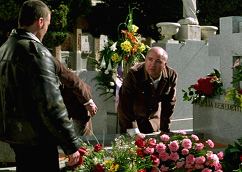
Madrid, Christmas 1970. The Spanish State has declared a state of emergency curtailing civil liberties. A young prostitute, Isabel Plaza Caballero, gives birth on a bus to a son she names Víctor. Twenty years later, Víctor Plaza shows up for a date with Elena, a junkie with whom he had sex a week earlier. Elena is waiting for her drug dealer to arrive and orders Víctor to leave, eventually threatening him with a gun. Enraged, Víctor wrestles the gun from her; in the process Elena gets knocked out, and the gun goes off. A neighbour hears the shot and calls the police.
Two cops respond to the report. The older cop, Sancho, is an unstable alcoholic who suspects his wife Clara of infidelity. The younger cop, David, is clean-cut and sober. Through the window they catch sight of Víctor physically struggling with Elena. Sancho is ready to storm the apartment, while David wants to call for a back-up. When they enter, Víctor holds Elena hostage at gunpoint. David tries to calm him down and get him to drop his gun, but Sancho sabotages his efforts by repeatedly threatening Víctor. Finally, David puts his gun to Sancho's head and gets first Sancho and then Víctor to put down their guns. David orders Elena to flee. Sancho then lunges for Víctor, and as they wrestle for the gun it fires.
Two years later, Víctor, in jail, watches a wheelchair basketball match. David, now partially paralysed from the gunshot two years earlier, is a star player in the 1992 Summer Paralympics. Elena, now his wife, cheers him on from the sidelines. Víctor has made good use of his time in jail, taking a correspondence course in education, working out, and enriching his mind with a variety of subjects, including the Bible. Four years later, he is released. His mother has died, leaving him some money and a house in an area scheduled for demolition.
Víctor visits his mother's grave, where he encounters Elena at her father's burial service. Without identifying himself, he briefly offers her his condolences. Before leaving the cemetery he encounters Sancho's wife Clara, who has arrived too late for Elena's service. They leave together and she visits his apartment. They establish a tentative relationship.
Elena, now off drugs and operating an orphanage, tells David of her encounter with Víctor. David stops by Víctor's house and warns him not to go near his wife. Víctor challenges him to prevent him from doing whatever he wants, but David punches him below the belt. David leaves, but he sees Clara arriving and watches from a distance. Clara, drawn by Víctor's enthusiasm and good looks, agrees to teach him how to make love while pampering him with gifts and affection. She eventually falls in love with him.
Víctor is accepted as a volunteer by the orphanage, which accepts the qualifications he earned in prison and discovers he is very good with the children. Elena objects, but can offer no compelling argument against Víctor.
David continues to trail Víctor and discovers that he works at his wife's orphanage. He confronts Víctor again, and Víctor denies responsibility for firing the shot that put him in a wheelchair. He demonstrates how Sancho made him squeeze the trigger because Sancho knew David was having an affair with Clara. Afterwards, David tells his wife what Víctor said, admitting that he was having an affair with Clara. Elena is disgusted, but still plans to leave the orphanage to get away from Víctor. Víctor tells Elena that his original plan of revenge was to become the world's greatest lover, make love to Elena all night long, and then abandon her, but that he now loves her too much to do so.
Víctor tells Clara that they should stop meeting, and they break up. While Víctor is working overnight at the orphanage, Elena arrives to remove her belongings and offers Víctor a night of passion on condition he never contacts her again. Elena then tells David about this night of infidelity. She tells him she will remain his wife because he needs her more than Víctor does. David is nevertheless intent on avenging himself against Víctor.
Clara, unable to bear Sancho's abuse any longer, leaves him in a violence scene, leaving him bloodied. David arrives and helps Sancho clean his wounds before showing Sancho photographs he has been taking of Víctor and Clara. Sancho and David drive to Víctor's house, arriving just as Clara has finished writing Víctor a farewell letter. Sancho and Clara hold each other at gunpoint and fire. Clara falls dead and Sancho is wounded. Sancho finally kills himself.
At the end, David narrates a letter written to his wife from Miami, where he is spending Christmas with some friends, apologising for the way everything turned out. At the orphanage, a pregnant Elena goes into labour and on the way to the hospital, she and Víctor get stuck in heavy traffic. Víctor is reminded of the circumstances of his own birth, and tells his unborn child that the Spanish people no longer live in fear as they did at the time of his birth.
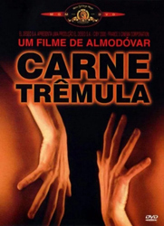
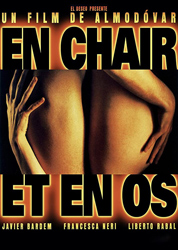
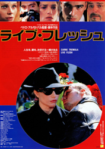
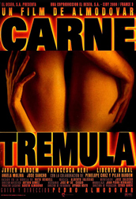
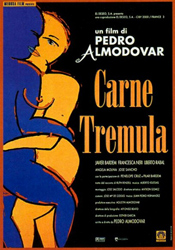
J. del Valls Domínguez, Manuel Gordillo and Augusto Algueró
Afro Celts and The A.C. Sound System